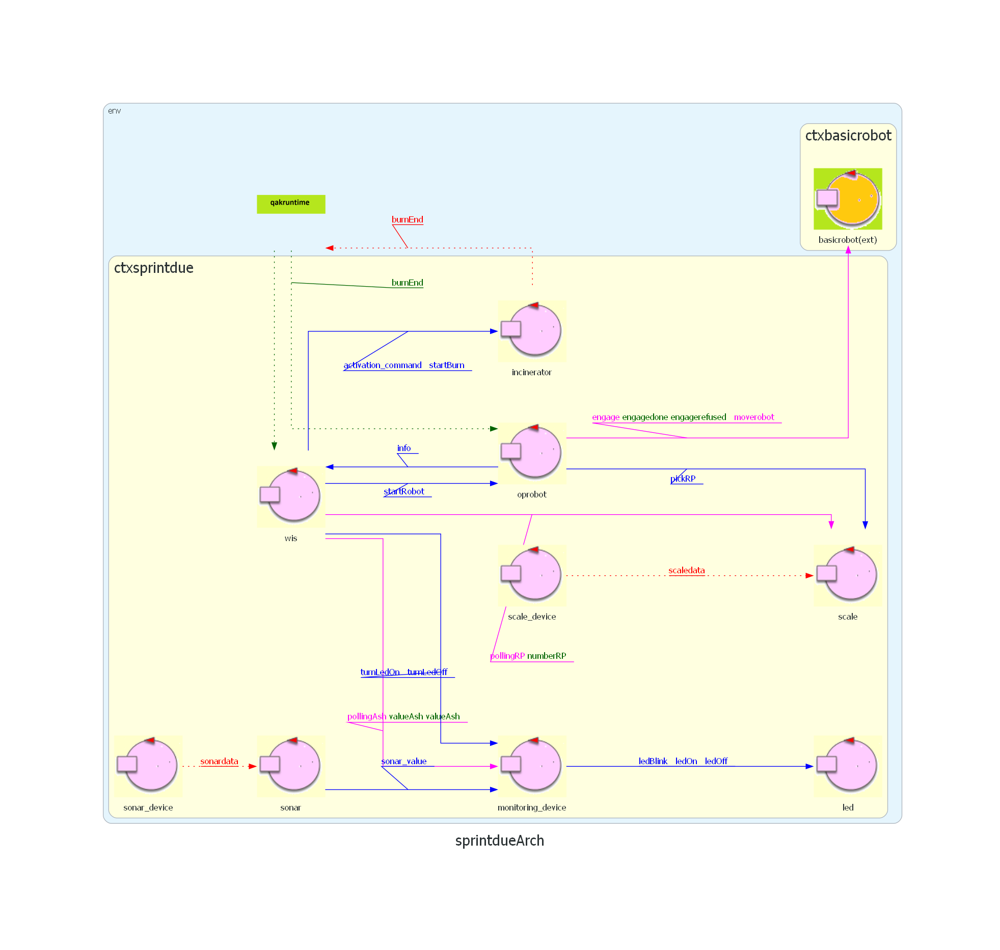
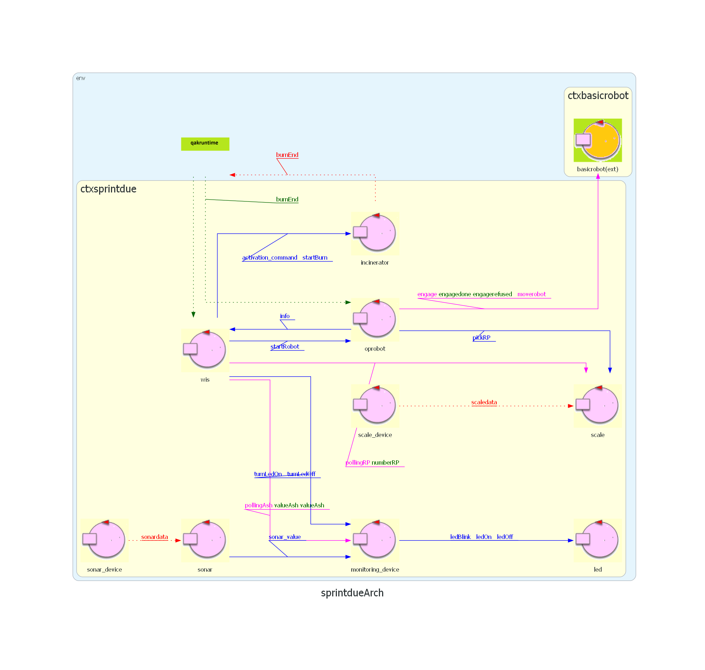

Introduction
Richiesta del committente
GOAL: Nello SPRINT3 ci si occupera' di quello di sviluppare l'interfaccia grafica (GUI) per la visualizzazione dei dati del sistema. Punto di partenza: Sprint1 
GOAL: Nello SPRINT3 ci si occupera' di quello di sviluppare l'interfaccia grafica (GUI) per la visualizzazione dei dati del sistema. Punto di partenza: Sprint1 
Analisi del problema
ServiceStatusGUI
La GUI deve essere capace di ricevere informazioni dal sistema e renderle disponibili all'esterno.Non sono previste interazioni con utenti esterni.
Non e' definito alcun metodo di interazione con il sistema.
Analisi del problema
Non e' specificato come la GUI debba ricevere queste informazioni dal sistema, e ci sono diverse opzioni possibili:
Considerando i precedenti sprint, dove il WIS possiede gia' tutte le informazioni necessarie per aggiornare lo stato della GUI, ma le ottiene tramite polling, che e' un processo che non garantisce la freschezza delle informazioni, quindi si ritiene piu' opportuno aggiungere un nuovo attore., chiamato ObserverActor. Questo attore ricevera' le informazioni ogni volta che si verifica un cambiamento di stato nel sistema, aggiornando la GUI con lo stato attuale del sistema.
Verra' sviluppata come una pagina Web, in modo da garantire un accesso semplice. Come struttura si fara' riferimento a Facade24Start.
Architettura logica

Test plans
Test 1
Il test controlla il corretto funzionamento dell'attore ObserverActorTest funzionale
Il test controlla che quando il WasteStorage non e' vuoto e l'AshStorage non e' pieno, i rifiuti vengono bruciati e la cenere nell'Ash storage incrementa.Project
ObserverActor
L'ObserverActor riceve dei messaggi ogni volta che uun dato significativo viene modificato e interagisce con la GUI attraverso unaUpdateResource, che viene eseguito per ogni messaggio ricevuto.
I messaggi sono:
Dispatch numRP : numRP(X) Inviato all'ObserverActor dalla Scale Dispatch statoIn : statoIn(N) Inviato all'ObservedActor dall'IncineratorDispatch statoOp : statoOp(N)Inviato all'ObservedActor dall'OpRobot Dispatch valAsh : valAsh(X) Inviato all'ObservedActor dal MonitoringDevice Facade24Start
Le uniche modifiche degne di nota rispetto a Facade24Start sono ApplguiCore.java e ActorOutIn.java in cui sono state rimosse funzionalita' non utilizzate.La pagina web ServiceStatusGUI.html che viene fornita agli utenti fornisce una tabella con le informazioni ricevute
Testing
By Michele Armillotta email: michele.armillotta2@studio.unibo.it

By Nicole Giulianelli email: nicole.giulianelli@studio.unibo.it

GIT repo: https://github.com/NicoleGiulianelli2/TemaFinale2024